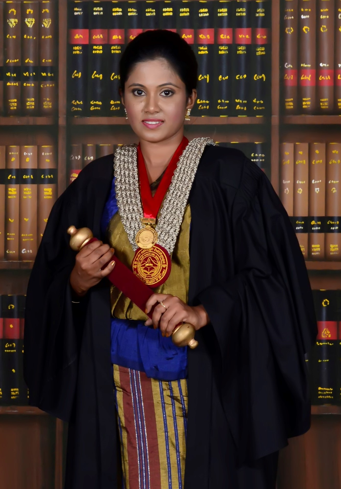

Greetings, I am Prasadi Thilanka Senadeera, a dedicated Data Analyst Engineer who is currently engaged in contributing
expertise to Cleanwatts in Portugal. My life journey has been marked by dedication, a thirst for knowledge, and an
unwavering pursuit of excellence.
Greetings, I am Prasadi Thilanka Senadeera, a dedicated Data Analyst Engineer who is currently engaged in contributing
expertise to Cleanwatts in Portugal. My life journey has been marked by dedication, a thirst for knowledge, and an
unwavering pursuit of excellence.
The commencement of my academic journey dates back to 1996 when my education was initiated at a local village school.
Fate smiled upon me in the form of a life changing opportunity, as the grade five scholarship examination was passed,
paving the way for admission to the nation's most prestigious educational institutions. This significant milestone
ignited my academic journey, during which I consistently excelled. By the time I completed my secondary education,
I had stamped my name among the top 100 students in the country, earning distinctions in all subjects.
Upon finishing my secondary education with distinction, I made the choice to pursue further studies in the field of
Physical Sciences, encompassing Mathematics, Chemistry, and Physics. Out of approximately 300,000 candidates,
I was among the privileged 5% who secured a university entrance spot in Sri Lanka. In 2013, my journey into the
world of Geomatics commenced at Sabaragamuwa University as I enrolled in the Surveying Science program, renowned
as a regional leader in South Asia. My initial semesters were dedicated to core courses, with a profound shift
in focus towards remote sensing (RS) and Geographical Information Systems (GIS) occurring by the fifth semester,
leading to my specialization in RS and GIS.
 My quest for international exposure and expertise was initiated during my undergraduate program, concluding in an internship opportunity at the Geoinformatics Centre at the Asian Institute of Technology in Thailand. As my four-year undergraduate journey concluded, I graduated with First Class Honours, earning a gold medal for exceptional performance and securing the highest final grade point average (GPA-3.82 out of 4) with distinction passes for specialized courses in my graduating class. In 2013, my academic expertise and multifaceted abilities paved the way for a teaching assistant role in the Department of Remote Sensing and GIS, a mere two months after my graduation. Responsibilities extended to instructing first-year and second-year undergraduates in land surveying field practices and delivering practical classes on remote sensing and GIS to specialization students. Following my promotion to the position of Assistant Lecturer in 2018, my contributions extended to encompass thorough teaching, the design of practical exams, and active involvement in other academic programs throughout the university.
As I embarked on a journey towards further academic growth and a broader horizon, a full scholarship for
the Master of Science in Geospatial Technologies program in 2019 provided me with the opportunity to delve deeper into my chosen field.
This collaborative initiative involving three esteemed institutions, the University of Münster in Germany, the New University of Lisbon
in Portugal, and the University Jaume I in Spain, expanded my expertise across various fields, including GIS, data science, and computer
programming. My final thesis, focusing on an automatic road extraction method using U-Net image segmentation models, enriched my knowledge
and proficiency in artificial intelligence, machine learning, and AI modules in Python programming.
Following graduation, I became part of Startuplo Lda in Portugal, a startup company that harnesses geospatial data and artificial
intelligence to create transformative products and services with a positive impact on human life and the world. Engaged as a
geospatial data analyst, I contributed to several projects spanning Agriculture and Vegetation, Environmental Disaster Risk Mapping,
Climate Change and Renewable Energy, Urban Planning, and Tourism. My role involved applying GIS, data science, and machine learning
concepts to acquire and analyze data for these projects, thereby contributing to innovative solutions and informed decision-making.
After nearly two years, a transition occurred as I joined Cleanwatts, a leading company in Renewable Energies, as a Data Analyst Engineer.
During my tenure at Cleanwatts, I contributed to the development of Machine Learning models for forecasting solar power generation and production
at energy communities. Additionally, I played a pivotal role in the creation of a web-based application to store, analyse, and visualize data and
information related to energy communities, benefiting both clients and the company.
Today in 2023, as I reflect upon my journey, I take immense pride in my accomplishments and the path I've traversed. My journey through life remains
resolute in its commitment to excellence and a constant thirst for knowledge. I am self-confident and ready to infuse abundant energy and unwavering
enthusiasm into any forthcoming opportunities that come my way.